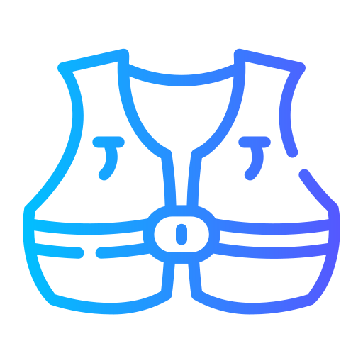
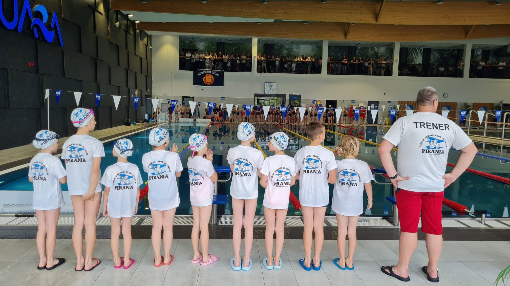
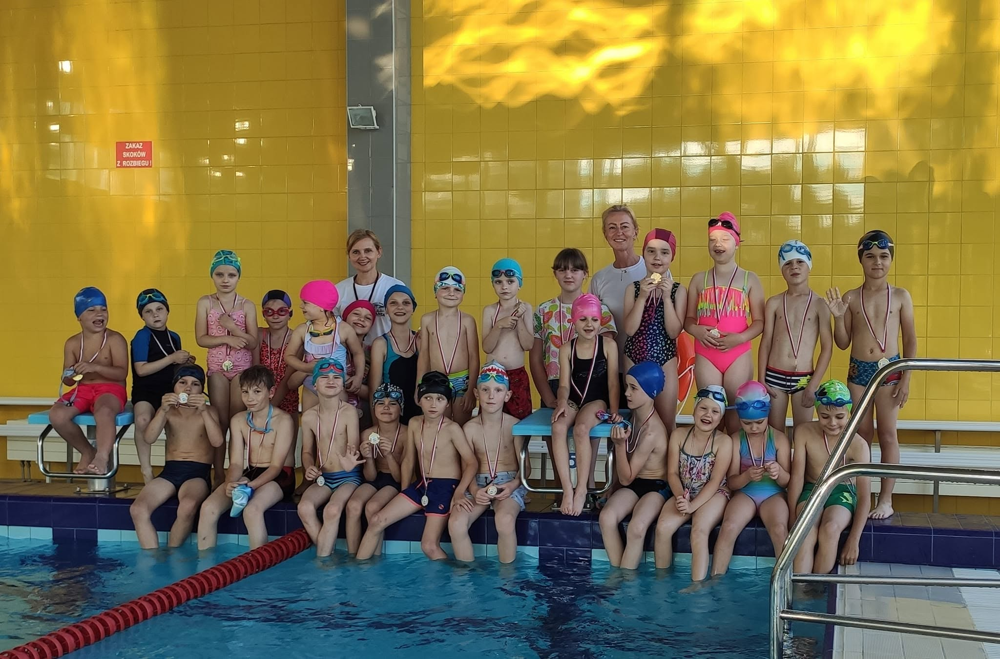
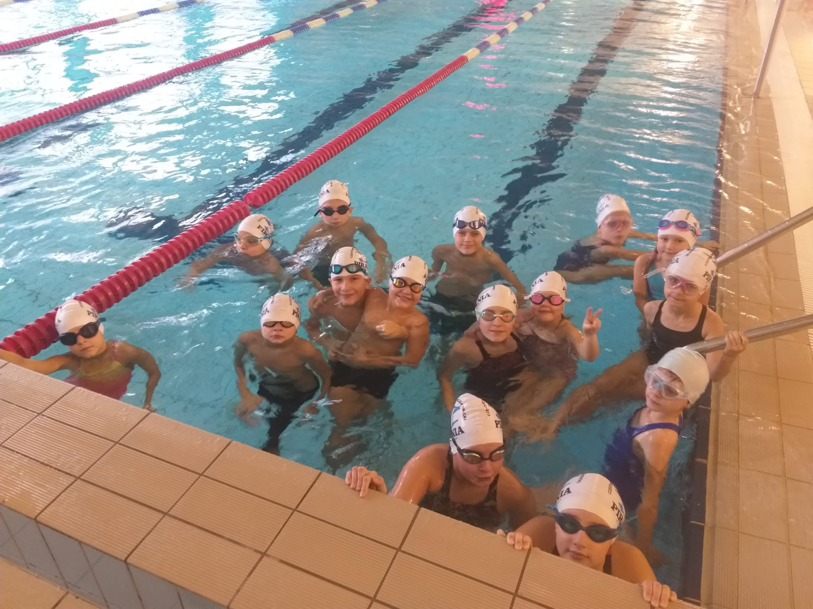
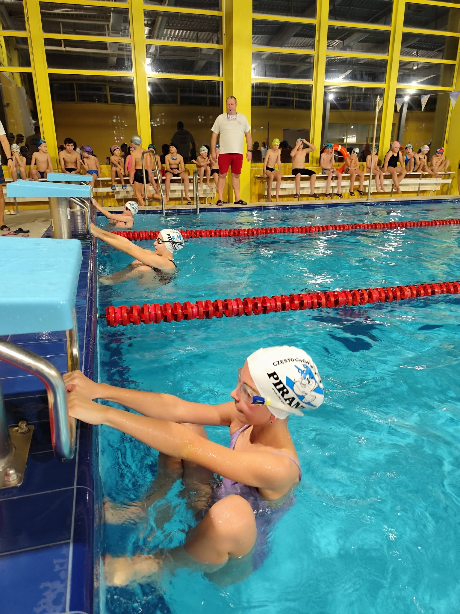
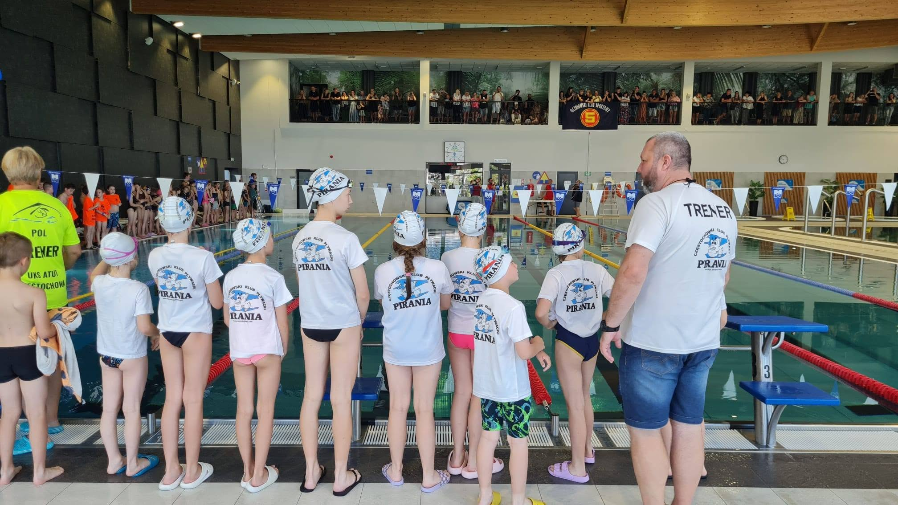
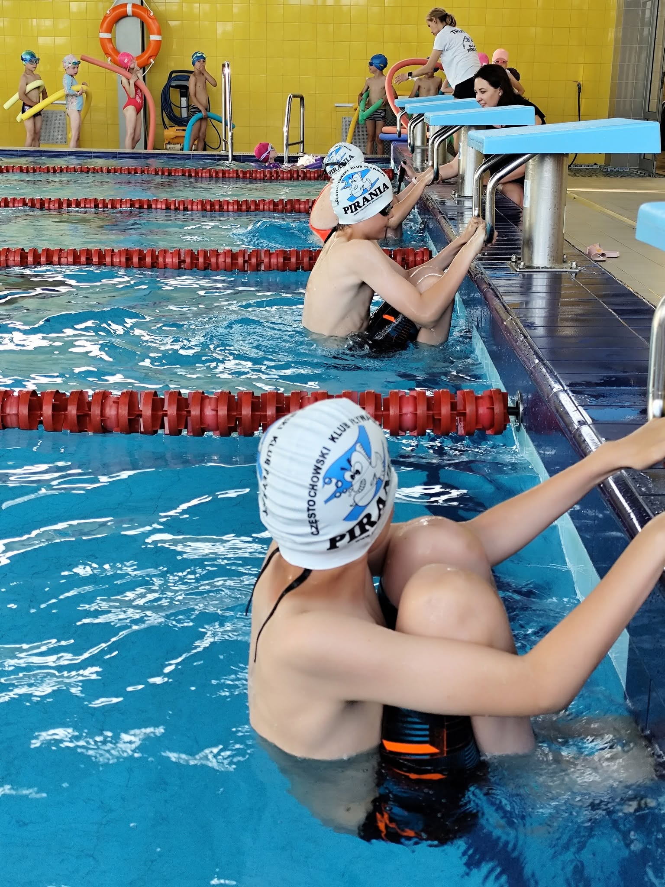
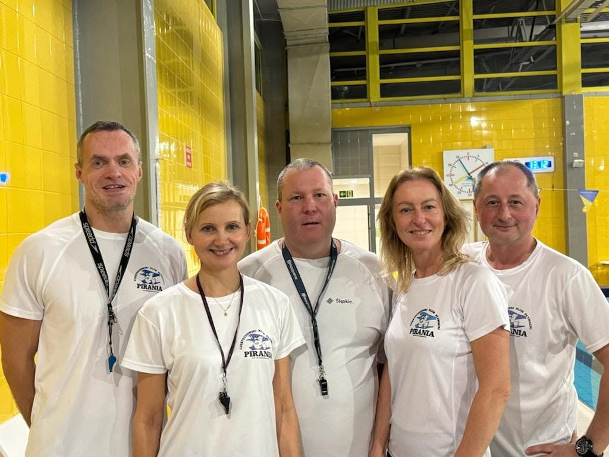

Doświadczeni trenerzy
Certyfikowani instruktorzy z wieloletnim doświadczeniem.

Bezpieczne warunki
Dbamy o bezpieczeństwo na każdym etapie szkolenia. Zajęcia odbywają się na trzech obiektach sportowych.
Indywidualne podejście
Każdy zawodnik jest dla nas ważny — wspieramy rozwój na każdym poziomie.
Dlaczego CKP Pirania?
Klub powstał w 1996 roku. Naszym celem jest popularyzacja pływania, promowanie zdrowego stylu życia i aktywnego spędzania czasu wśród dzieci i młodzieży. Do naszego klubu uczęszczają dzieci od 6 roku życia. Prowadzimy naukę pływania podstawowego, doskonalenie techniki oraz trening dla grup zaawansowanych. Przygotowujemy dzieci i młodzież do zawodów pływackich, dwubojowych.
- Indywidualne podejście – każde dziecko jest dla nas ważne.
- Przyjazna atmosfera – wspieramy, motywujemy, budujemy pewność siebie.
- Profesjonalna kadra – trenerzy z doświadczeniem i pasją.



Jak wyglądają zajęcia?
Zajęcia w CKP Pirania to połączenie nauki, zabawy i bezpieczeństwa. Dzieci uczą się poprzez ruch, ćwiczenia w wodzie i pozytywną atmosferę.



Nasze obiekty
Zajęcia CKP Pirania odbywają się na trzech obiektach sportowych. Zajęcia pływackie prowadzone są na pływalni przy Szkole Podstawowej nr 2 (Zespół Szkolno‑Przedszkolny nr 9) oraz na pływalni przy II LO im. R. Traugutta. Zajęcia biegowe i ogólnorozwojowe prowadzimy na Miejskim Stadionie Lekkoatletycznym. Kliknij w wybrane zdjęcie aby dowiedzieć się wiecej o danym obiekcie.
Grafik zajęć
Aktualny harmonogram zajęć w roku 2026/2027.
⚠️ Uwaga! Tymczasowa zmiana obiektu!
Na czas zamknięcia pływalni w SP2 zajęcia przenosimy na basen Sienkiewicz przy ul. Racławickiej. Ze względu na ograniczoną liczbę torów zajęcia będą odbywać się wyłącznie dla grup zaawansowanej (zawodnicy) i średnio zaawansowanej (dzieci pływające na głębokiej wodzie).
Zajęcia zaczynamy od czwartku (3.09.2026) wg następującego harmonogramu:
- Poniedziałek – 16.15-17.00 i 17.00-17.45
- Środa – 17.15-18.00 i 18.00-18.45
- Czwartek – 17.45-18.30 i 18.30-19.15
- Sobota – 13.00-13.45 i 13.45-14.30
Grupy początkujące i średniozaawansowane: Na czas awarii pływalni w SP2 udostępniono nam dodatkowo basen w LO Traugutta we wtorki w godzinach: 15.30 i 16.15. W pierwszej kolejności przyjmujemy dzieci zapisane już we wtorki i w piątki w SP2.
ul. Baczyńskiego 2a (Zespół Szkolno‑Przedszkolny nr 9)
gr. średnio zaawansowana
gr. zaawansowana
wejście od ul. Zbierskiego
gr. średnio zaawansowana
gr. 0 – grupa początkująca
Nasi trenerzy
Kadra CKP Pirania to doświadczeni instruktorzy, którzy z pasją uczą dzieci pływania.

Urszula Rydz
Instruktorka pływaniaNauczyciel dyplomowany, instruktor pływania i trener II klasy lekkiej atletyki. Prowadzi zajęcia dla grup początkujących i średniozaawansowanych.
Konrad Dzwonkowski
Trener pływaniaNauczyciel dyplomowany, trener pływania. Prowadzi zajęcia dla grup zaawansowanych.
Marcin Łojewski
Instruktor pływaniaNauczyciel dyplomowany, instruktor pływania i gimnastyki korekcyjnej. Prowadzi zajęcia dla grup średniozaawansowanych i zaawansowanych.
Piotr Ruszel
Instruktor pływaniaNauczyciel dyplomowany, instruktor pływania, trener lekkiej atletyki. Prowadzi zajęcia dla grup średniozaawansowanych i zaawansowanych.
Anna Marciniak
Instruktorka pływaniaTrener II klasy lekkkiej atletyki, nauczyciel dyplomowany, instruktor pływania i aqua-aerobiku. Prowadzi zajęcia dla grup początkujących i średniozaawansowanych.
Katarzyna Otrębska
Instruktorka pływaniaNauczyciel dyplomowany i instruktor pływania i gimnastyki korekcyjnej. Prowadzi zajęcia dla grup początkujących i średniozaawansowanych.
Gotowi na pierwsze zajęcia?
Zapisz dziecko na lekcję próbną i zobacz, jak wygląda trening w CKP Pirania.
Zapisz się